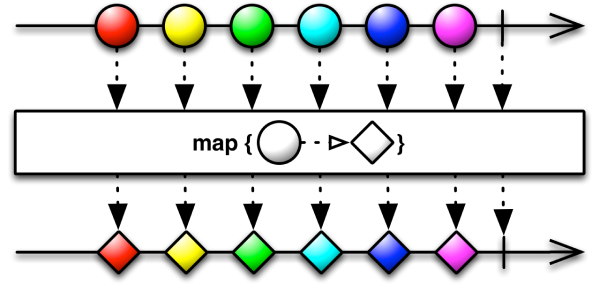
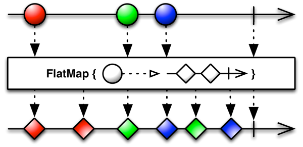
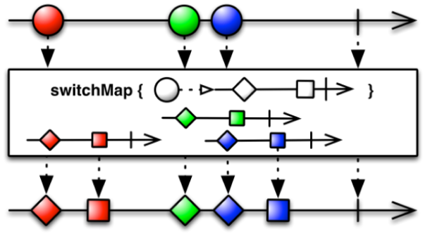
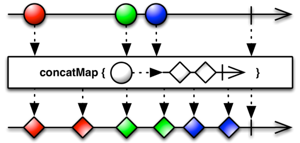

[RxJava, RxKotlin] Observable 변형하기 - map(), flatMap(), switchMap(), concatMap()
Observable은 Observable이 방출하는 데이터를 변형하는 다양한 메소드를 제공합니다.
map()
map()을 사용하면 Observable이 방출하는 이벤트를 변형할 수 있습니다.

예제 코드는 다음과 같습니다.
1 | val observable = Observable.create { |
결과는 다음과 같습니다.
1 | Value: 1 |
flatMap()
flatMap()는 Observable에서 방출하는 이벤트 각각을 Observable로 변형합니다. 그리고 각각의 Observable을 합쳐 하나의 Observable을 생성합니다.

예제 코드를 살펴봅시다.
1 | val observable = Observable.fromArray("Monica", "Rachel", "Phoebe") |
결과는 다음과 같습니다.
1 | Her name is Monica |
switchMap
switchMap()은 flatMap()과 유사합니다. 다만 아직 진행 중인 이전 이벤트가 있다면 이를 취소합니다.

concatMap
switchMap()도 flatMap()과 유사합니다. 다만 아직 진행 중인 이전 이벤트가 있다면 이를 취소하지않고 끝날 때 까지 기다린 후 방출합니다.
